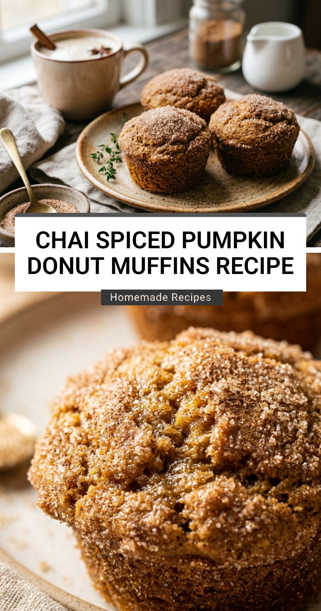

Chai Spiced Pumpkin Donut Muffins

There is nothing quite like the aroma of warm spices and sweet pumpkin filling your kitchen on a crisp autumn morning. These Chai Spiced Pumpkin Donut Muffins offer the best of both worlds. They have the soft, tender crumb of a classic muffin but are finished with a crunchy, sugar-coated exterior that reminds you of an old-fashioned bakery donut. It is the ultimate cozy treat for spice lovers.
Recipe Information
Prep Time: 15 minutes
Cook Time: 20 minutes
Total Time: 35 minutes
Servings: 12
Difficulty Level: Easy
Nutrition Information
Calories per serving: 225 kcal
Protein: 3g
Carbohydrates: 36g
Fat: 9g
Fiber: 2g
Sugar: 19g
Sodium: 210mg